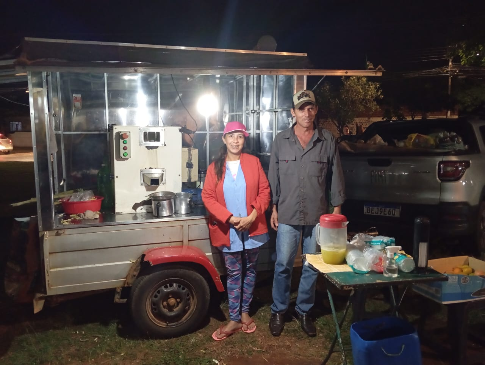

Olhe

Jailton
Jailton, feirante desde criança, começou ajudando seus pais a vender frutas e verduras. Hoje, ele cultiva e vende seus produtos, seguindo os passos dos pais como principal fonte de renda.
Olhe

Agnaldo
Agnaldo, 49, cultiva e vende legumes e verduras desde os 20 anos. Sua principal renda vem das feiras locais, onde é necessário cultivar o próprio produto e ter certificação estadual.
Olhe

Lucélia
Lucélia produz cana de açúcar há mais de 10 anos, após trocar a venda de grãos de café pelo caldo de cana. Ela e seu marido desenvolvem o negócio gradualmente desde então.
Descubra o Futuro da Agricultura Conosco
Os Koenigs entrevistaram diversos feirantes, com diferentes pontos de vistas sobre a Agricultura!